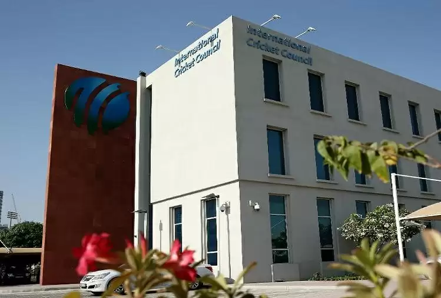

Overview
The International Cricket Council (ICC) is the world governing body of cricket. It was founded as
the Imperial Cricket Conference in 1909 by representatives from Australia, England and South Africa. It was renamed as the International Cricket Conference in 1965, and took up its current name in 1987. The ICC has its headquarters in Dubai, UAE.
The ICC has 105 member nations currently: 12 Full Members that play Test matches, and 94 Associate Members.[4] The ICC is responsible for the organisation and governance of cricket's major international tournaments, most notably the Cricket World Cup and the T20 World Cup.

Address:
Main Head Quarters of International Cricket Council - Dubai, UAE. Cell # +00987-654321 Email:icc-cricketcouncil@gmail.com
Main Head Quarters of International Cricket Council - Dubai, UAE. Cell # +00987-654321 Email:icc-cricketcouncil@gmail.com